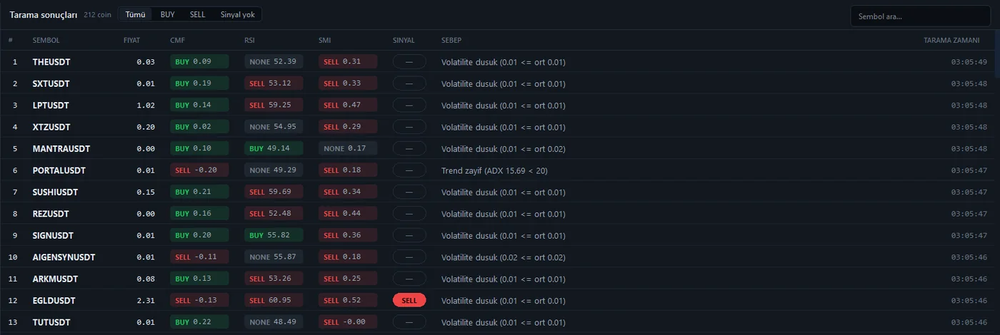

Product overview
What Is Sentralyx?
Sentralyx is a desktop trading terminal that combines market scanner, backtesting, strategy management, open position tracking and risk management tools for Binance and OKX markets in a single application.

Real app screen, captured in virtual mode.
Your rules, applied automatically
Scan, generate signals, manage positions
Sentralyx is a Windows desktop application that continuously scans the crypto market based on the strategy you build, generates BUY/SELL signals when your rules are met, and uses those signals to open and manage positions in virtual or real mode (Binance/OKX).
- Binance and OKX market coverage
- Crypto scanner and market screening
- Algorithmic trading and strategy rules
- Backtesting, MTF analysis and risk management

Three impossible jobs for a trader
Sentralyx automates scanning, signals and position management (SL/TP, trailing stop, break-even) with your rules.
You cannot scan the whole market all the time.
You cannot constantly watch and adjust the stop-loss and take-profit levels of open positions.
You cannot sit in front of the computer all day.
What is inside the app?
Turkish, English and Russian interface with an in-app guide on every tab.
Scanner
Scans 347 coins by default (pairs available on both Binance spot and USDT futures, stablecoins excluded) in rounds on the timeframe you choose.
Signal table
Shows indicator results, the BUY/SELL/NONE signal and the reason why a signal did not form for every coin.
Virtual mode
Simulates trading with the same flow without using real money.
Real mode
Sends orders to your Binance or OKX account and places stop and take-profit orders on the exchange.
Backtest
Tests your strategy on historical data including commission and slippage.
Indicator editor
You define BUY/SELL rules and parameters for 30 indicators.
Who it fits, and how
Who is it for?
It is designed for people interested in crypto who are familiar with concepts such as indicators, stop-loss and take-profit. You do not need to code; you build your strategy by selecting indicators.
Not a signal service
Sentralyx is not a signal group or a service that sells signals. Nobody sends you signals from outside; your own rules produce them. You decide which indicators are used, when a BUY or SELL is triggered, and how risk is managed.
Desktop terminal
Sentralyx is positioned as a local desktop terminal, not a web panel. The site explains product features and the licensing process.
Limits
Sentralyx does not guarantee profit; no strategy guarantees continuous gains and the final decision is yours. The app runs only on Windows and supports only Binance and OKX. The Free version does not open positions; it only scans and analyzes.
Related pages
Try your strategy in virtual mode today
Download the app, build your strategy and see how it works without using real money.